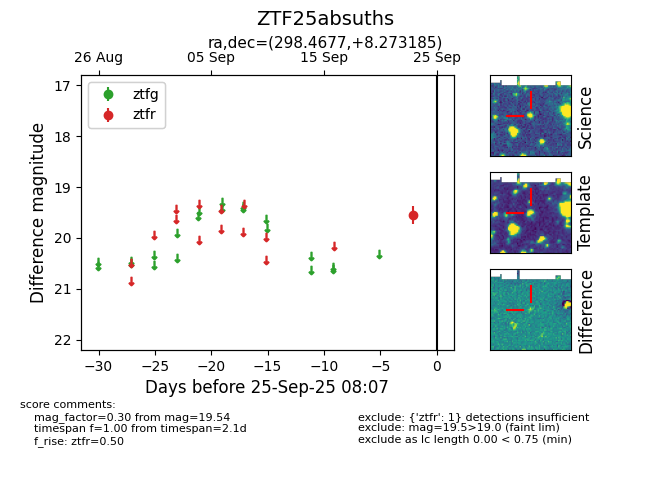

FINK: ZTF25absuths
Lasair: ZTF25absuths
ALeRCE: ZTF25absuths
ZTF25absuths (ztf,fink)
equatorial (ra, dec) = (298.4677,+8.27319)
galactic (l, b) = (47.5999,-9.86651)

last ztfr=19.54
1 ztfr detections